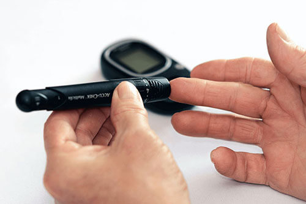
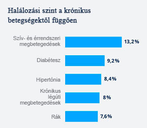
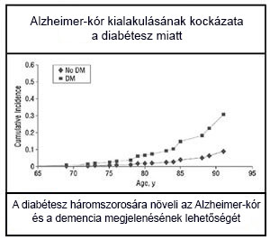
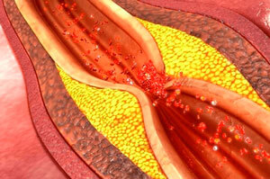
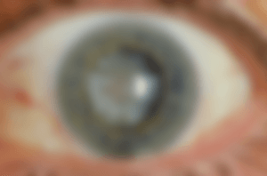
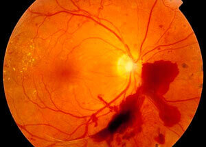
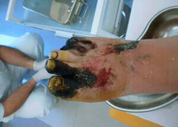
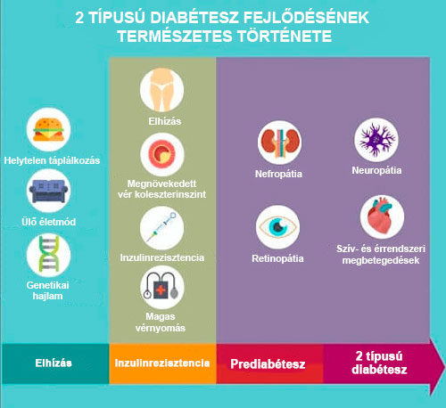

Tudósok egy új szert mutattak be, amely segít a cukorbetegeknek a vércukorszint csökkentésében

Diabétesz – krónikus betegség, amelynek szövődményei évente több millió életet követelnek. Világszerte több
mint 425 millió ember él, akinél cukorbetegséget diagnosztizáltak. Minden évben nő a cukorbetegek száma.
Miért nem szabad elhanyagolni a cukorbetegséget
Maga a cukorbetegség nem olyan szörnyű, mint szövődményei. Ez a baj negatív hatással van a szervezet minden
rendszerére és szervére (szem, vese, agy, szív).
Cukorbetegség lehetséges
szövődményei:
- Szívroham, stroke, szív- és érrendszeri betegségek Cukorbetegségnél magas
glükóz és koleszterinszint figyelhető meg, amelyek rontják az erek állapotát, különböző szív- és
érrendszeri betegségekhez vezetnek. A cukorbetegség legveszélyesebb szövődményei a szívroham és a
stroke, a cukorbetegek 80%-a szívinfarktusban és stroke-ban hal meg.
- Részleges vagy teljes látásvesztés Az erek károsodása, amelyek felelősek a
látás szerveinek vérkeringéséért, különösen a retina tápanyagainak biztosításáért. A probléma
elhanyagolt formájánál az ember teljesen elveszítheti látását.
- Veseelégtelenség, veseleállás Az erek károsodása a vesékben
veseelégtelenséghez, krónikus betegségekhez és teljes veseleálláshoz vezet.
- Alsó végtagok amputációja Az erek és az idegek károsodása következtében nem
gyógyuló fekélyek alakulnak ki a lábak lágy szövetén. Amelyek később fertőzéshez, a fertőzések
terjedéséhez, valamint a végtagok amputációjához is vezethetnek.
Arról, hogy a diabéteszt nem szabad elhanyagolni, számos tanulmány és statisztika árulkodik. Például a -es statisztikák szerint több mint 9,6 millió ember halt bele a cukorbetegség
szövődményeibe (szívroham, stroke, rák).



Eltömődött erek – a szívroham és a stroke gyakori okai

Vakság – a cukorbetegség gyakori szövődménye

Retina károsodása a cukorbetegség miatt

A diabéteszes láb előrehaladott esete, ami a láb amputációját eredményezi
A cukorbetegséget nehéz felismerni, épp ezért a betegség halálozási aránya rendkívül magas. Azonban van
néhány gyakori jel, amelyek megléte cukorbetegségre utalhat.
Ön veszélyben lehet! Végezzen el egy kis tesztet,
hogy ellenőrizze egészségét
Teszt elvégzése
1
2
3
4
5
6
7
8
Nem:
Életkor:
Testsúly:
Milyen gyakran érez vizelési ingert 2
órán belül?
Jelölje be a következő jelek
meglétét:
6. Voltak-e már családjában
cukorbetegség esetei?
7. Végez-e tornagyakorlatokat?
8. Hipertónia, valamint szív- és
érrendszeri megbetegedések megléte?
Eredmény:
Jelenleg önnél nincs jele cukorbetegségnek. Az egészség megőrzése érdekében
sportolnia kell és megfelelően táplálkozni.
Hogyan érzi magát a cukorbetegségben szenvedő ember?
A diabéteszt nem véletlenül nevezik csendes és észrevétlen gyilkosnak, hiszen a jeleit nagyon könnyű
összekeverni más betegségekkel.

Ha gyakran érzi magát levertnek és kimerültnek, ez túlzott megerőltetésre utalhat. Azonban ez az
állapot a prediabéteszes állapotnak és magának a cukorbetegségnek is az egyik legbiztosabb jele is.
Légszomj, szédülés, petyhüdt bőr és nehezen gyógyuló sebek is arról árulkodnak, hogy az embernek a
lehető leghamarabb meg kell mérnie a vércukorszintjét.
Diabétesz esetén hirtelen meg lehet hízni és minden erőfeszítés ellenére nem sikerül lefogyni.
Segítség cukorbetegségnél, hogyan kerülhetőek el a szövődmények
Sajnos, egy éles váltás a megfelelő táplálkozásra, a testmozgás, valamint az alapvető szerek szedése nem
csodaszer, amely segít csökkenteni a vércukorszintet, valamint megelőzni a szövődményeket.
Az embereknek, akik szedik az alapvető diabétesz elleni szereket, kiegészítő segítségre is szükségük van,
arra, ami segít csökkenteni a vércukorszintet és jobban érezni magát.
Az ilyen termékek közül hasznos kiemelni a szert. Segít:
Csökkenteni a vér glükózszintjét;
Szabályozni az anyagcsere folyamatait;
Normalizálni a vér koleszterinszintjét;
Javítani a szervezet tónusát;
Javítani az emésztést;
Kontrollálni az étvágyat.
A segít szabályozni az emésztőrendszer és az endokrin rendszerek munkáját
A szer összetétele olyan növényi kivonatokat tartalmaz, amelyek már régóta ismertek a szervezet
támogatásában nyújtott tulajdonságaikról cukorbetegségnél:
Erdei gurmar
Segít csökkenteni a vércukorszintet, elősegíti a szív- és érrendszeri
betegségek megelőzését
Fügekaktusz
Elősegíti a testsúly normalizálását, segít elnyomni az étvágyat,
csökkenteni a rossz koleszterin szintjét
Fenyő
Segít a vizeletürítés normalizálásában, elősegíti a szervezet
immunrendszerének erősítését
Boróka
Elősegíti az emésztés javítását, segít megszabadulni a gyakori vizelési
ingertől
Vásárlói ajánlják a szert
A szer vásárlói körében nemrég végzett felmérés a magas hatékonyságát mutatta. Összesen 6076 embert
kérdeztek meg telefonon.
Felmérés eredményei:
Normalizálódott a vércukorszint
94%
Megszabadultak a gyakori vizelés problémájától
89%
Képesek voltak normalizálni a súlyt
86%
Visszatértek az aktív életmódhoz
93%
A olyan szernek mutatta magát, amely segít elnyomni a diabétesz összes jelét, támogatni a szervezetet
és megszüntetni a mellékhatásokat, amelyek az állandó diabétesz elleni szerek szedésével járnak, valamint
normalizálni a vércukorszintet és visszatérni az aktív életmódhoz.
Épp jelenleg zajlik egy egyedülálló akció, amely lehetővé teszi a megvásárlását a legkedvezőbb
áron.
Figyelem! Ma és -ig a szerre 50% kedvezmény érvényes!
Ahhoz, hogy a szert megkaphassa speciális áron, kérelmet kell benyújtania a hivatalos
weboldalon. A csomagok száma speciális áron korlátozott, érkezzen megrendelni saját csomagját!
Óvakodjon a hamisítványoktól! Az eredeti csak a hivatalos
weboldalon kerül értékesítésre.
Megjegyzések:
Benkő László
Köszönöm , hogy időben végigcsináltam a kúrát és
elkezdtem diétázni, most a cukrom normális és nem ingadozik. A szer megszolgálta a költségeit.
6 órával ezelőtt
Déri Helga
A hivatalos weboldalon vásárolta? Volt még kedvezmény?
6 órával ezelőtt
Benkő László
Igen, akkor is volt kedvezmény és most is van. Pont tegnap rendeltem a
bátyámnak egy csomag szert.
6 órával ezelőtt
Déri Helga
Ó, milyen jó! Köszönöm! Én magam is most rendeltem és kedvezményt is
kaptam.
6 órával ezelőtt
Németh Andrea
A cukorbetegséget semmilyen esetben sem szabad elhanyagolni, a
munkahelyemen a kolléganőm lábát amputálni kellett a diabétesz miatt, úgyhogy azt tanácsolom,
vigyázzanak az egészségükre, táplálkozzanak helyesen és sportoljanak, hiszen a kövérség a diabétesz
első oka.
6 órával ezelőtt
Cseke Borbála
Most csinálom a kúrát és mondhatom, hogy a szer
segít, kiválóan segít csökkenteni a cukrot. Boldog vagyok és jól érzem magam.
6 órával ezelőtt
Varga Imre
szert szedek más szerekkel együtt, hogy csökkentsem a
vércukorszintemet. Hatás van. A kúra végéig egy hét van hátra. Ajánlom ezt a szert.
6 órával ezelőtt
Molnár Piroska
Az összetétel tett kíváncsivá, mondják, ezek a kivonatok tényleg megvannak
a szerben?
6 órával ezelőtt
Lángh Bence
Igen, biztosan megvannak. Még sok E-vitamin is. Én is úgy választok szert,
hogy minél kevesebb vegyi anyag legyen benne. Ezért választottam a szert.
5 órával ezelőtt
Szabó Patrícia
Megrendeltem Még mindig van kedvezmény.
5 órával ezelőtt
Tóth Boglárka
A nekem segített megszabadulni a vécére szaladgálás mániájától,
csaknem ötször szaladtam egy óra alatt.
5 órával ezelőtt
Lakatos Emil
Megjegyzem ezt a szert!
5 órával ezelőtt
Teleki Dianna
Én pedig le tudtam fogyni a szernek köszönhetően! Ő
és a diéta segítettek rendbe hozni az alakomat! Nem is számítottam rá, hiszen azért ittam, hogy
csökkentse a vércukorszintemet!
5 órával ezelőtt
Falusi György
Én is lefogytam kissé, amikor szert szedtem. Ez normális.
5 órával ezelőtt
Ádám Renáta
Megcsináltam a tesztet és az eredményem prediabétesz. Elkezdek figyelni az
egészségemre és diétázni. Már megrendeltem a szert.


Köszönöm , hogy időben végigcsináltam a kúrát és elkezdtem diétázni, most a cukrom normális és nem ingadozik. A szer megszolgálta a költségeit.